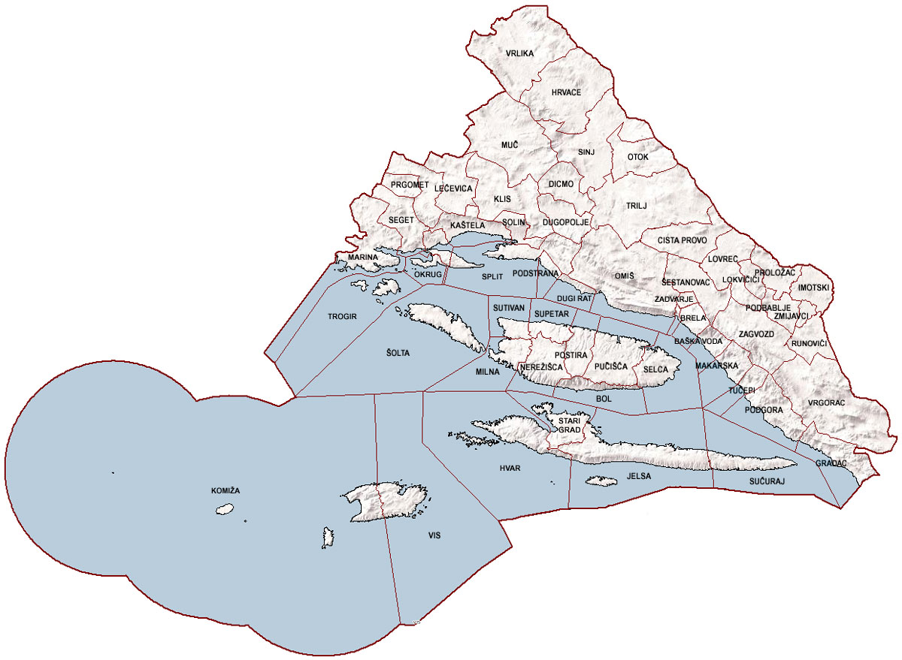

4524
km²
455 242
stanovnika
16
gradova
39
općina
368
naselja
Splitsko-dalmatinska županija
Splitsko-dalmatinska županija prostorno je najveća županija Hrvatske.
Proteže se od Vrlike na sjeveru do otoka Palagruže na jugu, od Marine na zapadu do Vrgorca na istoku.
Graniči s Republikom Bosnom i Hercegovinom na sjeveru, s Dubrovačko-neretvanskom županijom na istoku, a na jugu se prostire do granice teritorijalnog mora Republike Hrvatske.
Otočno područje Županije sastoji se od 74 otoka i 57 hridi i grebena.
